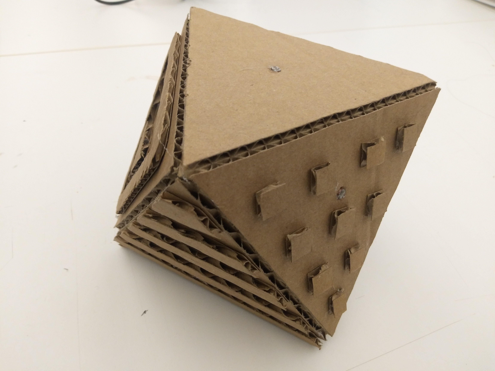
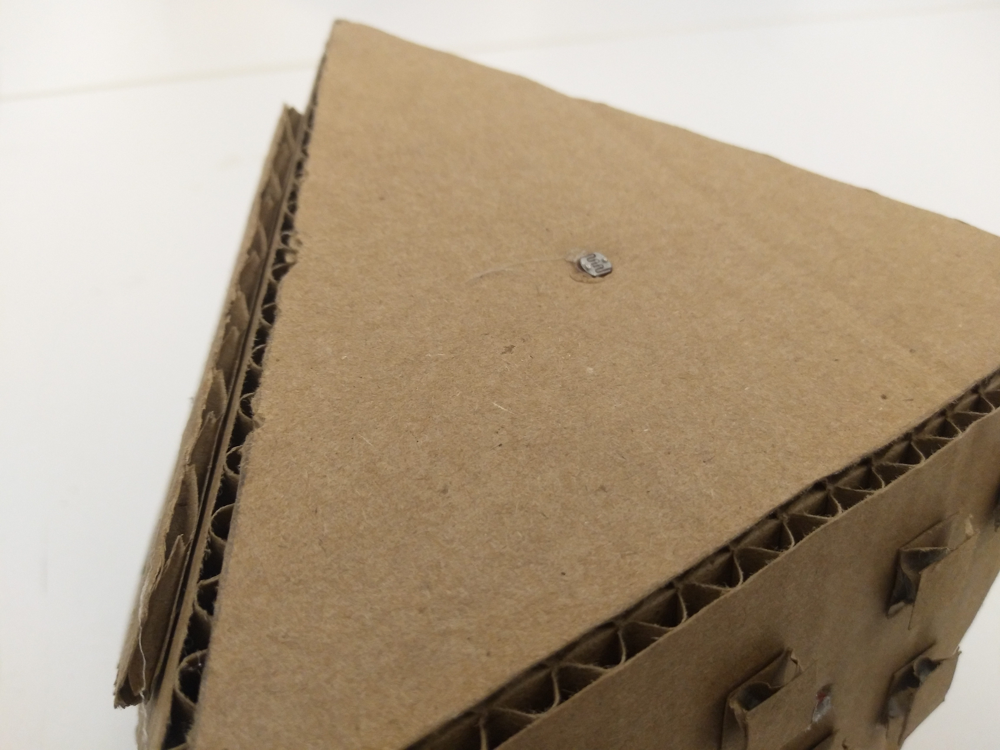
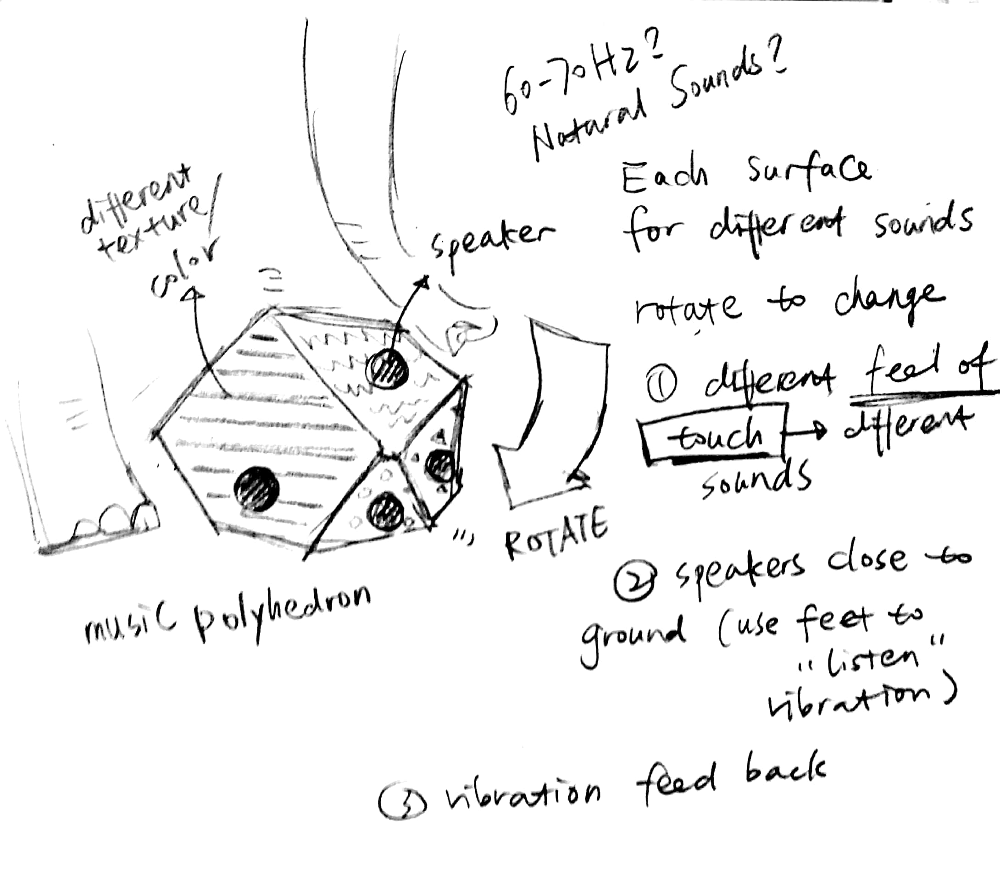
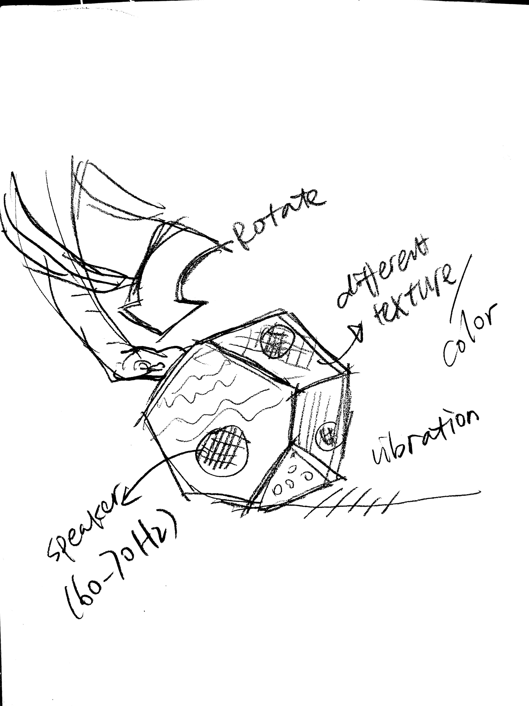

Prototype II
My second prototype is still based on music enrichment for elephants. Research shows that music can be a kind of enrichment for animals like elephants since it is able to reduce the frequency of elephants’ stereotype behaviors. (Reference1 The effects of music on animal physiology, behavior and welfare, Reference2 Auditory stimulation as enrichment for zoo-housed Asian elephants (Elephas maximus), Reference3 Animals Make Music: A Look at Non-Human Musical Expression) . There are also some zoo do “crazy” things like playing drums for elephants to give them new experience.(Music Enrichment for Elephants - SANTA BARBARA ZOO)
I want to make an automatic music box which is more suitable for elephants to interact with and also interesting for them to play. The design is this polyhedron with different textures on different surfaces. It is made of metal or wood with solid structure. When elephants use their trunk to explore it, they can easily feel the difference of each surface. Then can rotate it with trunk or feet, and this will change the value of each analog of the photoresistances installed on each surfaces and play different music. There is a surface for “no sounds” for them to choose so that they have a easy way to control to listen to the music or not. The speaker of it is toward ground so that the sounds can reach they directly through ground for their sensitive senses. It will reduce the interrupt of the noise in zoo.


Final proposal - a no sound music box
Elephants have 5 main ways to communicate with each other, namely acoustic communication, visual communication, tactile communication, seismic communication and chemical communication. I want to explore the possibility of using artificially transmitted seismic as enrichment to bring new experience for elephants. O’Connell-Rodwell’s research(Wild elephant (Loxodonta africana) breeding herds respond to artificially transmitted seismic stimuli) shows that elephants can understand seismic stimuli and response to it. Though in her circumstances, the information is danger alert; there are potential to use more positive seismic signal to attract and interest the elephants.
Plan A
My first plan is to create a seismic music box like this. It is a polyhedron with different texture and color on each surface. Elephants have a very sensitive sense of touch, they are even capable of using its trunk to perceive differences in the width of grooves as small as 0.25 mm. The densely packed Pacinian enable them to feel the smallest vibration and also “listen” by their foots. This music box have a speaker toward ground and it can make sounds that can be listened throned ground. Once elephants rotate the box, it will play another piece of seismic sounds.

Plan B
Based on plan A and a research on elephants’s foot and nail health in zoos (A survey of elephant husbandry and foot health in North American zoos), I want to design a product improve their health condition. Many research show that elephants especially old elephants are suffering from foot and joint diseases. The main reasons for this is the hard concrete ground and the lace of exercise. Elephants spend about 20 hours foraging in wild, but it is very hard for them to keep the equal amount of exercise in zoo. My installation will make seismic signal somewhere in elephants’ living area and it will guide the elephant go to that position. After a while, another will make sounds to attract elephants go to another place so that they will be guide to walk and exercise longer.
Proposal 1
The first proposal was based on my general question of investigating the current state of existence of elephants. Because the elephants in the wild are walking around for a whole day, the migration will also bring a huge amount of exercise. However, the range of activity of captive elephants compared with the wild is limited, and the amount of exercise is obviously inferior to that of elephants in the wild. In the A Survey of Elephant Husbandry and Foot Health in North American Zoos, the author mentions that many captive elephants have diseases with the feet and joints, and the amount of exercise is one of the ways to improve (and also change the ground material, etc.). “The odd of an elephant holding facility encountering an annual foot pathology in their herd is significant lower in younger herds that are provided more exercise.” also proved it.
Foot and joint diseases can cause long-term pain and suffering to elephants. Pain can even lead to some stereotype behaviors, which seriously affect their comfort. Based on this problem, I hope that we can design a system to encourage elephants to walk and forage to increase the amount of exercise and reduce the problem of standing still for a long time, in the case of maximizing the restoration of elephants' living habits in the wild. My system is an automatic mobile feeding device. Device A is a feeding device that is placed on the ground to restore the habit of eating grass. It contains only a certain amount of food, and the food with strong smell (such as banana) in the inner layer.It starts to move after the elephant eats the external things, and the smell will guide them walk to the next feeding location. Here, the elephant will find the feeder B located on the tree (or hanging high) to restore the elephant's habits of eating leaves and fruits. B also contains a small amount of food and inner layer, and it will rotate after the elephant has finished eating. Change position and use the smell to direct the elephant to the next feeding point. With this cycle, the routes, angles, heights, etc. of A and B can be randomly set to ensure that the elephants can be provided with different foraging paths every day. The main function of this device is to restore the experience of huge territory in a limited space, and improve the quality of life by allowing elephants to spend more time independently eating and walking to improve their foot health.
Proposal 2
The second proposal aims to provide elephants with a kind of spontaneous entertainment. Studies have shown that music (classical music, etc.) can provide some kinds of enterteiments for elephants. Based on the research of "providing high-enrichment to elephants through sound", I want to design a more non-training recreational instrument for elephants. . The article mentions that the elephant has more interest in natural, different vibration frequencies than the "melody" of human melody. My plan A is to make an irregular polyhedron with speakers on each side to play different sounds. Elephants can use the elephant trunk or legs to push the instrument over, and the photoresistor will determine which side it is on and play audio at different frequencies. At the same time, the surface materials of each side are slightly different, so that the sensitive and sensitive elephants can connect their favorite sounds with a certain texture and trigger playback again. After the face is turned over successfully, the instrument will give a short vibration feedback so that the elephant can master the operation faster.
